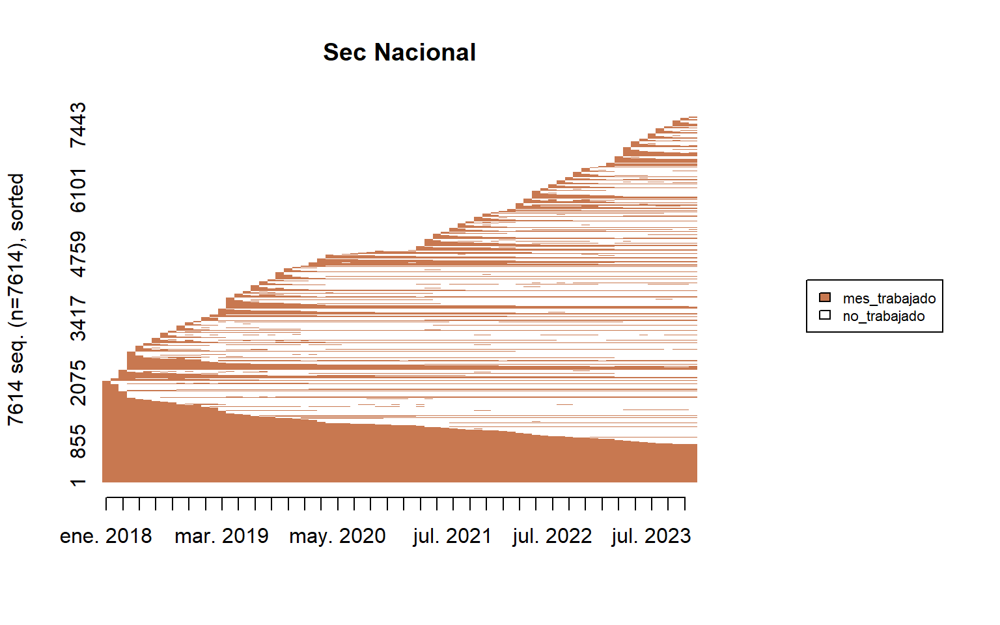
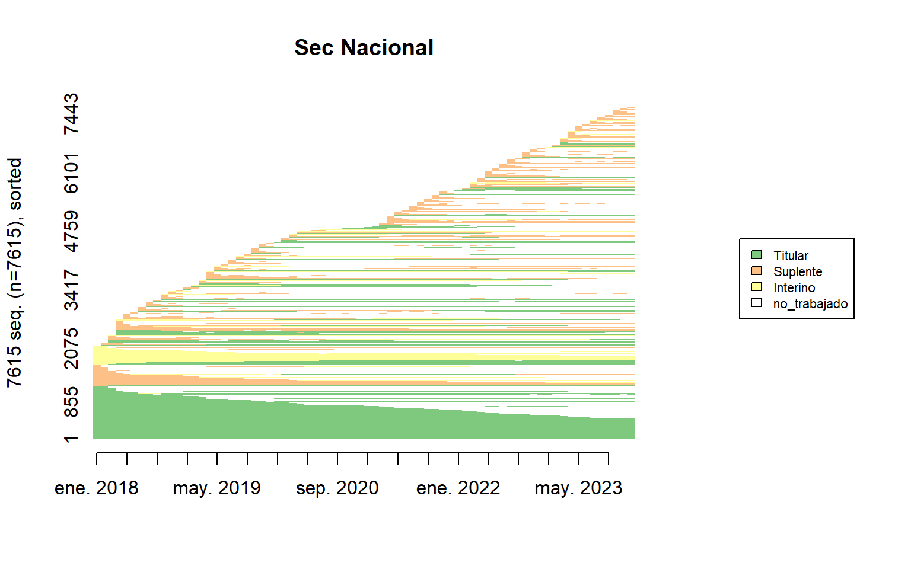
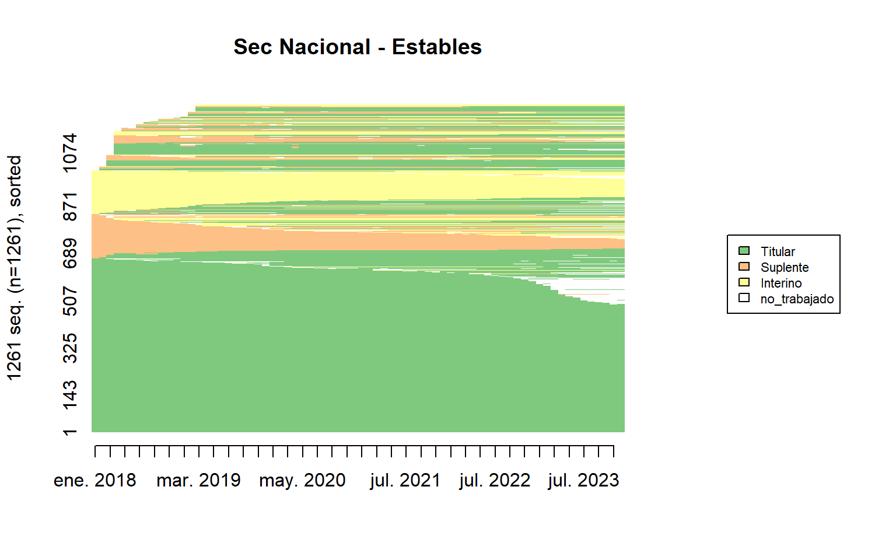
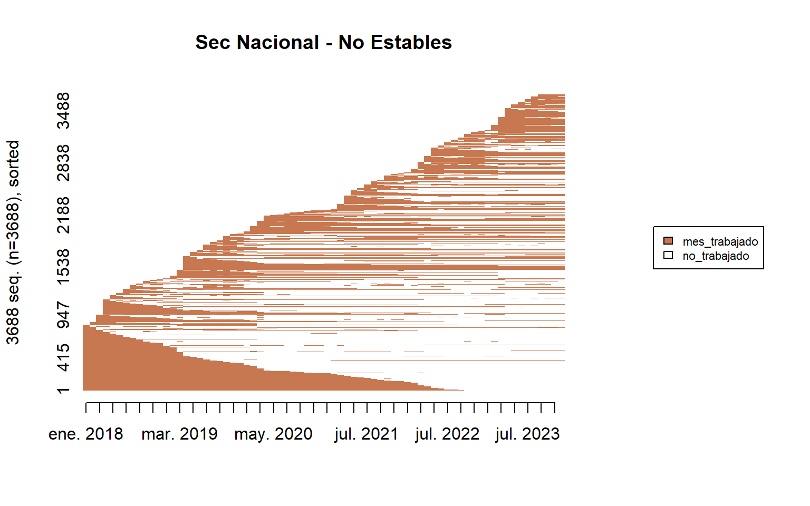
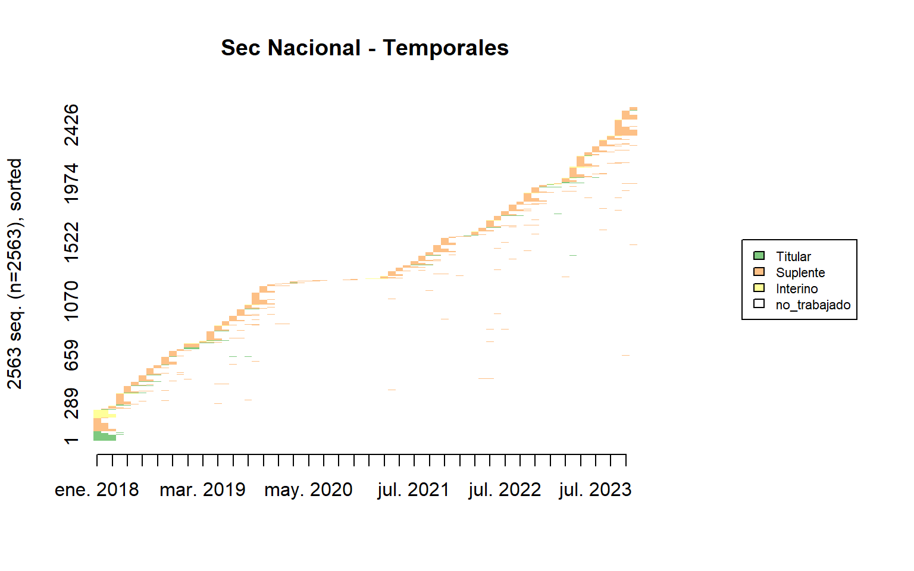
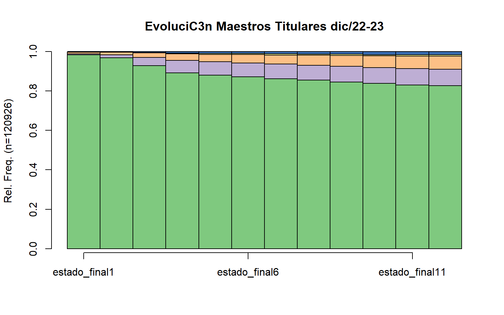
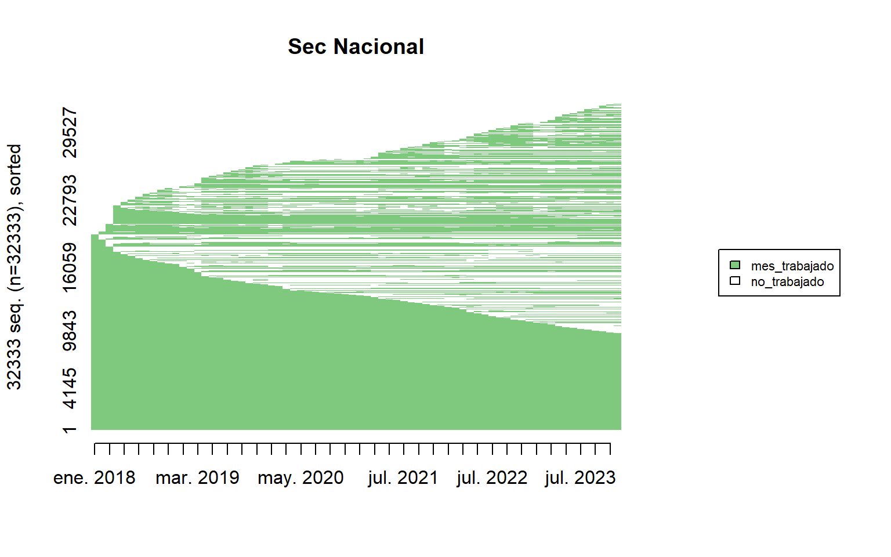
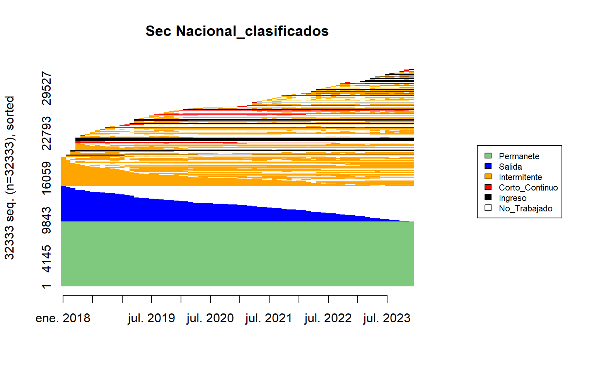
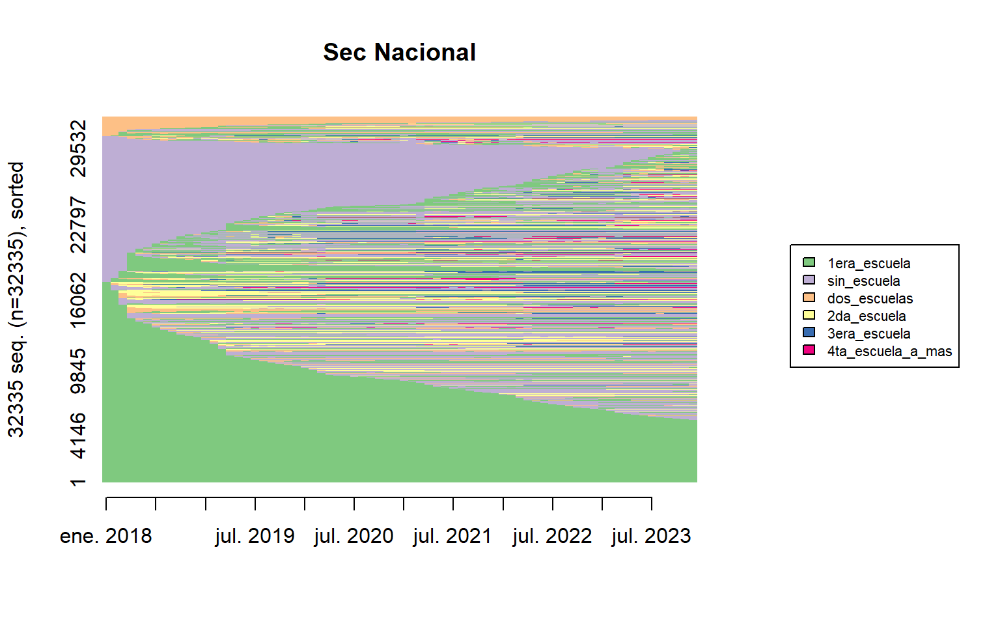
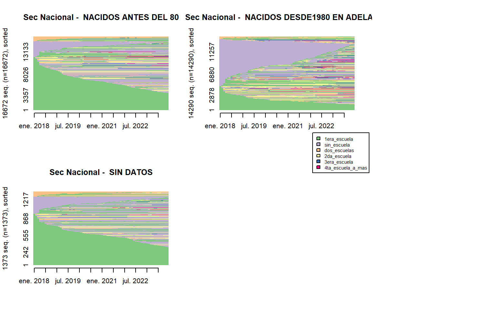

| Tipo | Cantidad | Porc | Meses | Porc_mes |
|---|---|---|---|---|
| Estables | 126363 | 16.6 | 8738486 | 52.6 |
| No_Estables | 376648 | 49.5 | 7431039 | 44.7 |
| Temporales | 258579 | 34.0 | 439676 | 2.6 |
| Total | 761590 | 100.1 | 16609201 | 99.9 |
En el periodo de análisis que es de 72 meses, se usaron 761590 docentes, en este periodo la continuidad de los docentes en una escuela es de 21.81 meses en promedio . En el gráfico de la izquierda se muestra la continuidad de los docentes independientemente de su situaciC3n de revista, en el gráfico de la derecha se muestra esa continuidad desagregada por situaciC3n de revista
Adicionalmente los docente fueron tipificados, según su continuidad en las escuelas.
Docentes Estables : 126363 son docentes estables, es decir, que han trabajado en una escuela durante el 80% o más del periodo de análisis. Esto representa el 16.6% del total. Se puede observar en el gráfico de la derecha que estos están compuestos principalmente por docentes titulares y se evidencia en la gruesa mancha verde que atraviesa el gráfico, en tanto los suplentes (naranja) y los interinos (amarillos) aportan en menor medida.
Docentes No Estabales : 376648 son docentes que han trabajado en una escuela entre el 80% y 4 meses del periodo de análisis. Esto representa el 49.5% del total.
Temporales: 258579 son docentes que han estado en la escuela por periodos muy cortos, entre 3 y 1 mes. Esto representa el 34% del total. Si bien representa una cantidad importante de docentes su estadía en las escuelas es muy corta, se puede ver en lo vacíos con puntos intermitentes.
El comportamiento que se describe resume la situación nacional, sin embargo esto puede cambiar dependiendo de la provincia que se analice.
Para mayor claridad se hace una desagregación de los gráficos superiores de modo que se evidencie la tipificación según su continuidad.






Estado Maestro Titular Dic 22 vs Dic 23
En esta sección, se analiza la rotación de los maestros de grado titulares al finalizar el año 2022. Se busca visualizar su situación en el siguiente año y clasificar los posibles escenarios:
- Continúan en la misma escuela en la que trabajaban.
- Abandonan el sistema educativo.
- Cambian de puesto en la misma escuela
- Dejan la escuela, pero se mantienen en el sistema.
- Ascienden a un puesto directivo.


| classification | cantidad | pct | primer_valor_antiguedad | ultimo_valor_antiguedad |
|---|---|---|---|---|
| Permanente | 97080 | 30.02 | 12.2 | 17.4 |
| Salida | 51885 | 16.05 | 20.5 | 21.2 |
| Ingreso | 32918 | 10.18 | 3.9 | 6.6 |
| Corto_continuo | 25492 | 7.88 | 8.2 | 8.3 |
| Intermitente | 115956 | 35.86 | 5.3 | 8.1 |
| classification | cantidad | pct | prom_edad |
|---|---|---|---|
| Permanente | 4077 | 25.39 | 44 |
| Salida | 2622 | 16.33 | 50 |
| Ingreso | 1729 | 10.77 | 37 |
| Corto_continuo | 1241 | 7.73 | 41 |
| Intermitente | 6386 | 39.78 | 39 |

